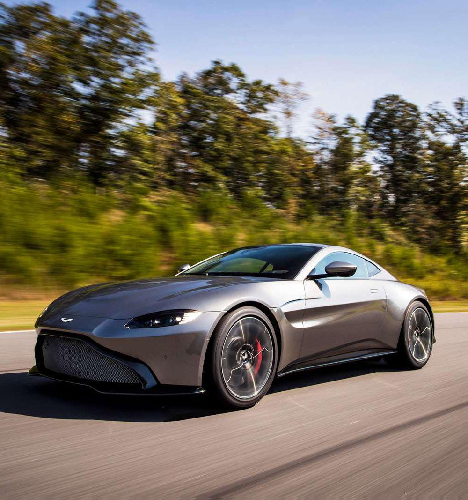
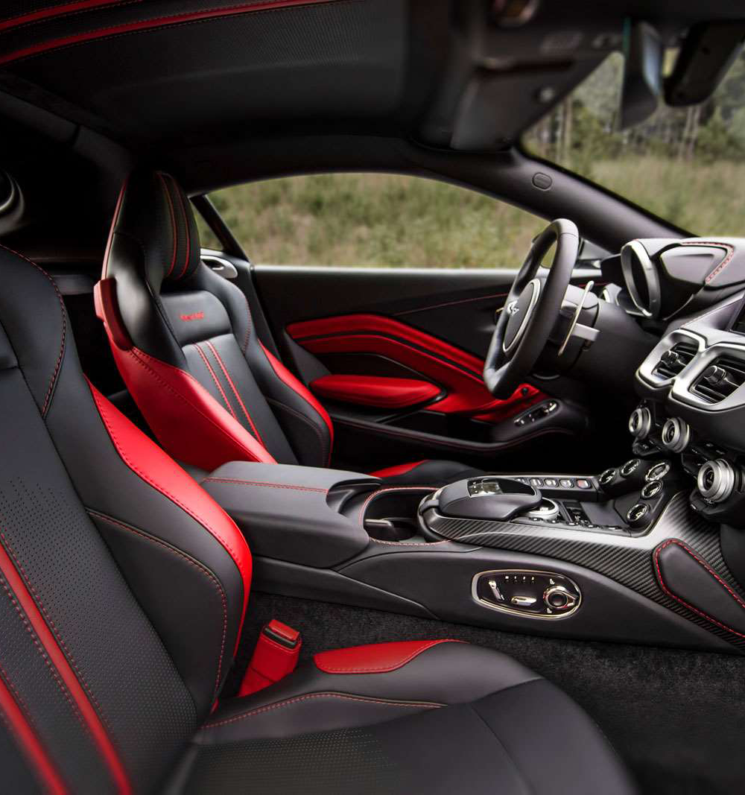

<!DOCTYPE html>
<html lang="en">
<head>
    <meta charset="UTF-8">
    <meta name="viewport" content="width=device-width, initial-scale=1.0">
    <meta http-equiv="X-UA-Compatible" content="ie=edge">
    <title>VANTAGE</title>
    <link rel="stylesheet" href="css/import.css">
    <script src="https://ajax.googleapis.com/ajax/libs/jquery/1.12.4/jquery.min.js"></script>
    <script src="https://cdnjs.cloudflare.com/ajax/libs/waypoints/2.0.3/waypoints.min.js"></script>
    <script src="js/counterup.js"></script>
    <script src="https://kit.fontawesome.com/ca85dab293.js" crossorigin="anonymous"></script>
    <script>
        $(document).ready(function(){
            $('.counter').counterUp();
        });    
    </script>
</head>
<body>
    <div class="wrap sub sub2">
        <header>
            <h1>toplogo</h1>
            <nav>
              <label for="mnav" class="fas fa-bars mui fa-2x"></label>
              <input type="checkbox" id="mnav" class="mui">
              <ul>
                  <li><a href="indax.html">HOME</a></li>
                  <li><a href="sub1.html">DBX</a></li>
                  <li><a href="sub2.html" class="active">VANTAGE</a></li>
                  <li><a href="sub3.html">DB11</a></li>
                  <li><a href="sub4.html">DBS SUPERLEGGERA</a></li>
                  <li><a href="sub5.html">RAPIDE AMR</a></li>
                  <li><a href="sub6.html">ASTON MARTIN VALKYRIE</a></li>
              </ul>
            </nav>
        </header>
        <section>
            <div class="spectArea">
                <h2></h2>
                <dl>
                    <dt><strong class="counter">195</strong> <small>MPH</small></dt>
                    <dd>TOP SPEED</dd>
                </dl>
                <dl>
                    <dt><strong class="counter">503</strong> <small>BPH</small></dt>
                    <dd>POWER</dd>
                </dl>
                <dl>
                    <dt><strong class="counter">3.6</strong> <small>S</small></dt>
                    <dd>0~62MPH</dd>
                </dl>
            </div>
            <div class="mainText">
                <h2><small>DISCOVER</small><br>A BORN PREDATOR</h2>
                <p>Vantage is raw and instinctive, unwavering in its singular purpose: to overwhelm the senses through its world-renowneddesign, agile performance and dedicated craftsmanship. Its heart beats with a high powered 4.0 litre twin-turbocharged V8,producing that visceral Aston Martin roar. A rare breed and a statement of independence on the road, Vantage embodies allthat is beautiful in our performance sports car range.</p>
                <p>Vantage AMR is a new breed of predator, 95kg lighter in weight, and boasting a seven-speed manual transmission. This is abeast designed to deliver pure, engaging, manual performance.</p>
                <p>Race track, winding country road or the everyday commute, Vantage is an Aston Martin of outstanding class, delivering a driveso intensely felt that it demands to be experienced time and time again.</p>
            </div>
            <ul class="detailIMG">
                <li>
                    
                </li>
                <li>
                    
                </li>
                <li>
                    
                </li>
                <li>
                    
                </li>
                <li>
                    
                </li>
                <li>
                    
                </li>
            </ul>
            <div class="detailText">
                <dl>
                    <dt>UNMISTAKABLE PRESENCE</dt>
                    <dd>Like the archetypal hunter, everything has been finely tuned for a purpose. Sculptural forms create anathletic predatory stance, while muscular flanks and broad haunches express the agility and dynamisminherent to the car.</dd>
                </dl>
                <dl>
                    <dt>A STATEMENT OF INTENT</dt>
                    <dd>The signature ultra-slim rear light graphic illuminates the full-width of the tailgate, accentuated by theflick in the Vantage’s tail. It provocatively expresses the car’s animalistic character in what is set to becomean iconic symbol of performance.</dd>
                </dl>
                <dl>
                    <dt>IMMERSIVE AND FOCUSED</dt>
                    <dd>The distinctive cockpit feel of the interior is one of absolute focus and functionality. A lower driving positioncreates a more immersive experience, intimately connecting the driver with the car and the road ahead.</dd>
                </dl>
            </div>
            <ul>
                <li>
                    
                </li>
                <li>
                    
                </li>
                <li>
                    
                </li>
            </ul>
        </section>
        <footer>
            <h2>footer logo</h2>
            <ul>
                <li><a href="sub1.html">DBX</a></li>
                <li><a href="sub2.html">VANTAGE</a></li>
                <li><a href="sub3.html">DB11</a></li>
                <li><a href="sub4.html">DBS SUPERLEGGERA</a></li>
                <li><a href="sub5.html">RAPIDE AMR</a></li>
                <li><a href="sub6.html">ASTON MARTIN VALKYRIE</a></li>
            </ul>
        </footer>
    </div>
</body>
</html>